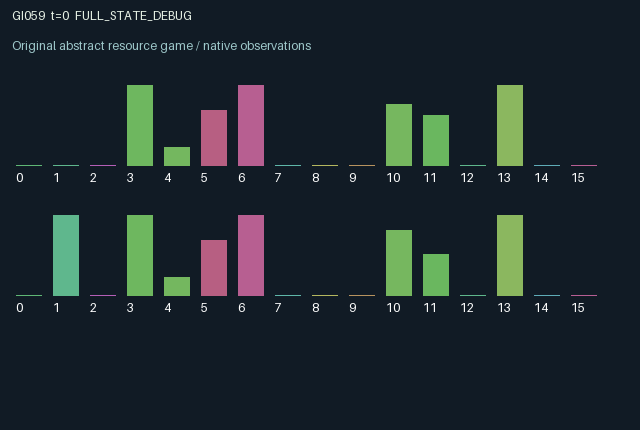

GI059 / LEGACY_ARRAY
astra-d2-00059: Periodic allocation voting with endogenous voting weight
2 agents5 actions16 observation columns32 original horizonRuntime: PASS
Release verification episode
Untrained uniform legal actions. Actual JAX state sampled along the full original episode; full-state debug camera. No human performance or learning claim.

Run this game
crucibles play --game 59
Start Python locally, then open the address printed by the terminal. Installation, multiplayer, takeover and keyboard controls →
Objective, rewards & ending
Exact task contract
{
"termination": "Original kernel t >= 32; see mechanism and source"
}Declared per-step reward bounds: -1.0 to 1.0. Observability: source_defined.
Rules
Original mechanism document (historical status wording retained)
# astra-d2-00059: Periodic allocation voting with endogenous voting weight This parentless proposal combines generic periodic collective allocation, public equipment maintenance and compensation-weighted voting. It was authored from the supplied interface contract without a parent or experiment feedback. Its relation to familiar governance mechanisms is explicit; no structural uniqueness, operational eligibility or learning outcome is asserted. A common production machine allocates 75 percent of its capacity to the currently favored role and 25 percent to the other. Actual production also depends on shared machine quality and each role's current productivity. Production accumulates in capped personal stocks. Actions are 0 harvest personal stock, 1 spend influence voting to favor role zero, 2 spend influence voting to favor role one, 3 repair the shared machine, and 4 survey the other's upcoming productivity. All five actions remain legal. Voting spends up to 0.5 personal influence. Its weight is increased by the voter's accumulated allocation arrears. Arrears rise when actual allocations fall below a reference flow and decay otherwise; thus past production, existing allocations and later political power are coupled. Votes accumulate for four steps. At the boundary the higher tally selects the next period's allocation mode; ties preserve the existing mode. The current step's production uses the old mode, so voting acts through delayed future allocations. Tallies then reset. Influence replenishes slowly and also increases through repair. Repair improves a shared quality state and therefore both agents' future production. Harvesting produces the immediate personal reward and wears shared equipment. Repair, voting and surveying all occupy steps that could have harvested. Stocks permit harvest timing across the four-step political cycle. Current and forthcoming productivity are private to each role. Forthcoming productivity becomes current at a period boundary, and the supplied random key draws the subsequent forecast. A survey records the other's then-current forecast in a personal report. Reports persist but age; at a boundary their age is set to 32 to mark them stale for the newly drawn forecast. Even a survey taken on a boundary concerns the forecast becoming current, not the new future one. Both agents see the public mode, tally, shared quality and time to the next boundary. Neither directly sees the other's stocks, influence, arrears or productivity. Reward is tanh of 1.1 times harvested stock, minus small influence-spending, repair and survey costs, ensuring [-1,1]. Both agents' votes alter persistent future allocation; both can improve common production or impose equipment wear. These incentive possibilities are design hypotheses, not evidence of learning performance. Observation columns are: elapsed time/32; role index; public favored role; steps until next boundary/4; own stock/3; shared machine quality; own influence; own arrears/2; role-zero tally/8; role-one tally/8; own current productivity; own next-period productivity; last surveyed other forecast; report age/32; own last allocation; own last harvest. The final post-transition state is retained at t=32, including any final political-period update. No execution, compiler or acceptance result is claimed.
Commands
0Action 0; see mechanism and source
1Action 1; see mechanism and source
2Action 2; see mechanism and source
3Action 3; see mechanism and source
4Action 4; see mechanism and source
Roles & abilities
agent_0 Original legacy agent; see mechanism and source
agent_1 Original legacy agent; see mechanism and source
Observation permissions
Training receives only the original observation rows. Role cameras use declared visibility; debug cameras are explicitly marked. Local benchmark records log debug exposure and role takeover history.
Exact observation layout
[]
Entity visibility & attributes
[]
Actual verification & provenance
Per-game execution receipt
{
"game": "gi059",
"status": "PASS",
"verification_revision": 2,
"source_sha256": "eb16523323a6d556aa672297a613c255cb37f5a353df511e987a85e1bddae73f",
"seed": 20261101,
"runtime": {
"jax": "0.4.38",
"numpy": "1.26.4",
"devices": [
"TFRT_CPU_0"
]
},
"dimensions": {
"num_agents": 2,
"observation_size": 16,
"num_actions": 5,
"max_steps": 32
},
"checks": {
"eager_reset": {
"status": "PASS",
"seconds": 1.1613082885742188
},
"observation_spaces_legal_masks": {
"status": "PASS",
"seconds": 0.18878912925720215
},
"eager_step": {
"status": "PASS",
"seconds": 1.0273511409759521
},
"jit_reset": {
"status": "PASS",
"seconds": 0.5240867137908936
},
"jit_step": {
"status": "PASS",
"seconds": 0.35674452781677246
},
"eager_jit_integer_parity_float_measurement": {
"status": "PASS",
"seconds": 0.0009546279907226562
},
"jit_vmap_reset": {
"status": "PASS",
"seconds": 0.39934468269348145
},
"jit_vmap_step": {
"status": "PASS",
"seconds": 0.549562931060791
},
"outer_autoreset_api": {
"status": "PASS",
"seconds": 0.8900108337402344
},
"full_original_horizon_episode_and_render": {
"status": "PASS",
"seconds": 2.349015474319458
}
},
"human_scores": null,
"browser_controls": "PENDING",
"failures": [],
"elapsed_seconds": 7.966502666473389,
"float_parity_max_abs": 0.0,
"numerical_parity": "EXACT",
"raw_terminal_absorbing": "NOT_PART_OF_ORIGINAL_LEGACY_CONTRACT",
"terminal_outer_reset": "PASS",
"episode_steps": 32,
"scripted_random_returns": [
3.4266068529104814,
1.7842167450580746
],
"terminal": true,
"demo_information": "FULL_STATE_DEBUG",
"demo_frames": 33,
"render_roles_checked": 2
}Chromium control verification
{
"game": "gi059",
"status": "PASS",
"human_scores": null,
"engineering": true,
"checks": [
"catalog_selected_and_real_native_reset",
"dom_queue_and_native_step",
"second_participant_ownership_and_native_joint_step",
"all_roles_individually_controllable_no_role_cap",
"explicit_debug_camera",
"release_to_pure_ai_without_reset"
],
"seconds": 3.757761240005493
}Original identity and file hashes
{
"id": 59,
"key": "gi059",
"title": "astra-d2-00059: Periodic allocation voting with endogenous voting weight",
"summary": "",
"tags": [],
"family": "legacy_array",
"dimensions": {
"num_agents": 2,
"observation_size": 16,
"num_actions": 5,
"max_steps": 32
},
"source_sha256": "eb16523323a6d556aa672297a613c255cb37f5a353df511e987a85e1bddae73f",
"manifest_sha256": "aef1aae6d932e746cfe2b6d7980158c4a24d8e61f724eed1bbc4bec059984f60",
"files": [
{
"file": "candidate.py",
"sha256": "eb16523323a6d556aa672297a613c255cb37f5a353df511e987a85e1bddae73f",
"bytes": 4962,
"origin": "work/exp_2/astra_generation/discovery_v2/initial/candidate_00059/attempt_00/candidate.py"
},
{
"file": "mechanism.md",
"sha256": "d7963bdb0112b5f3381586defb3387288c07910fdf74baa30cc951640e5a4599",
"bytes": 3331,
"origin": "work/exp_2/astra_generation/discovery_v2/initial/candidate_00059/attempt_00/mechanism.md"
}
],
"original_status": "LEGACY_SOURCE",
"original_saved_replay": false,
"release_validation": "PASS",
"human_scores": null,
"browser_validation": "PASS"
}